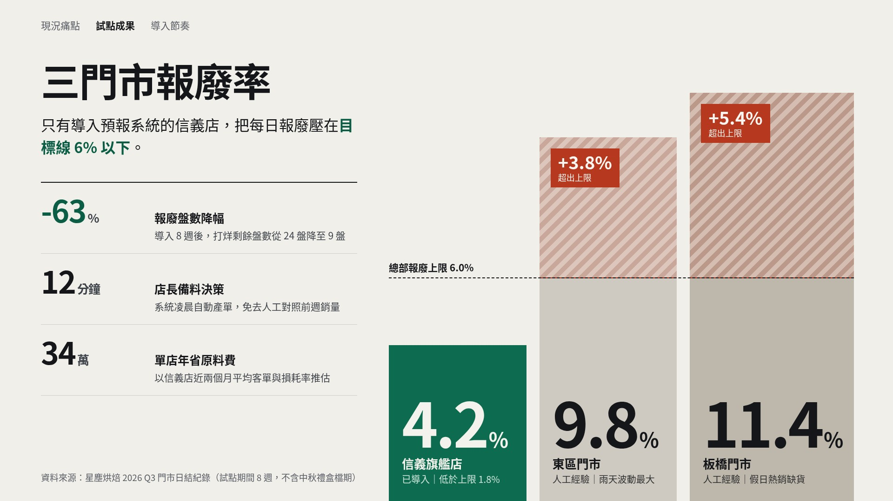
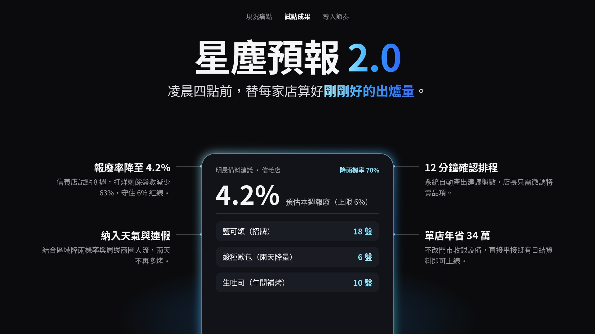
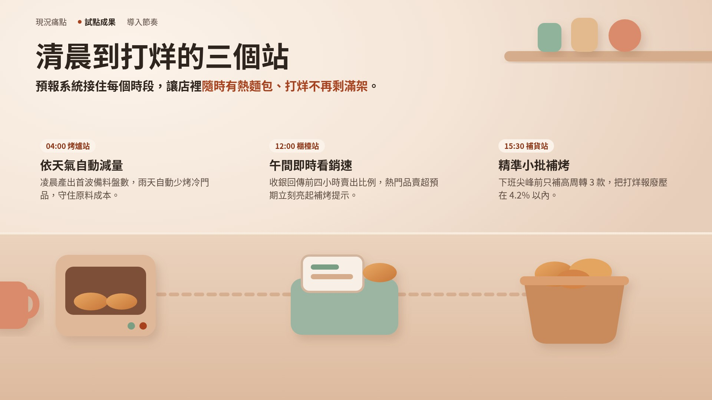

星塵烘焙・智慧補貨系統｜Gate 2 風格樣張
同一份虛構專案（星塵烘焙智慧補貨），由首批三款 Style DNA 自由編排呈現：穩健（顧問報告淺色紙）、大膽（Apple 深色舞台）、驚喜（插畫紙黏土融合版）。
首批三款風格方向比較構圖骨架、明暗、字體聲音與視覺媒介各自獨立；選定方向後再決定淺／深底與三組 OKLCH 主題配色

A｜穩健・顧問報告（淺色紙）色塊即圖表＋巨大數字＋虛線目標線，最適合向管理層提案要預算

B｜大膽・Apple 發表（深色舞台）發光裝置主視覺＋漸層關鍵字＋細線標註，適合全公司新品上線發表

C｜驚喜・插畫場景（紙黏土融合 C 版）物件說故事、內容住進烘焙坊三個站（附可選 AI 升級插槽），適合門市教育訓練